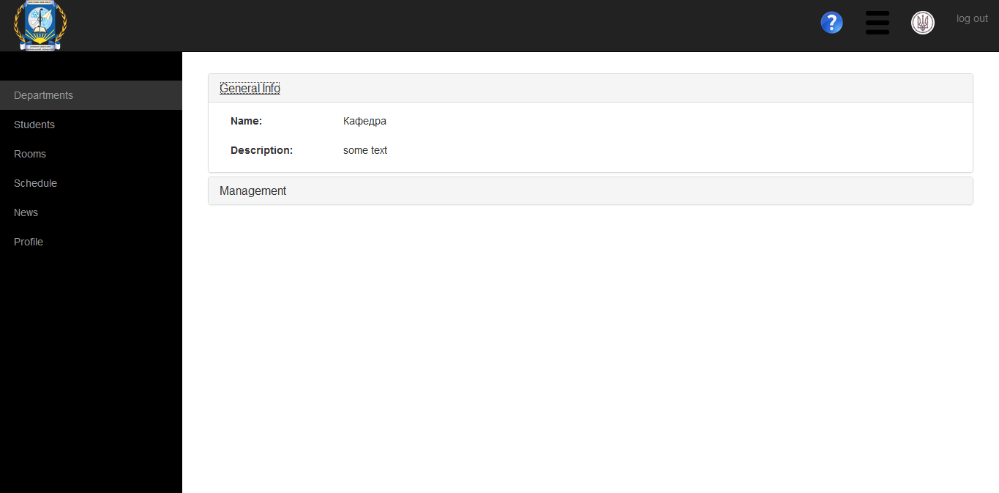
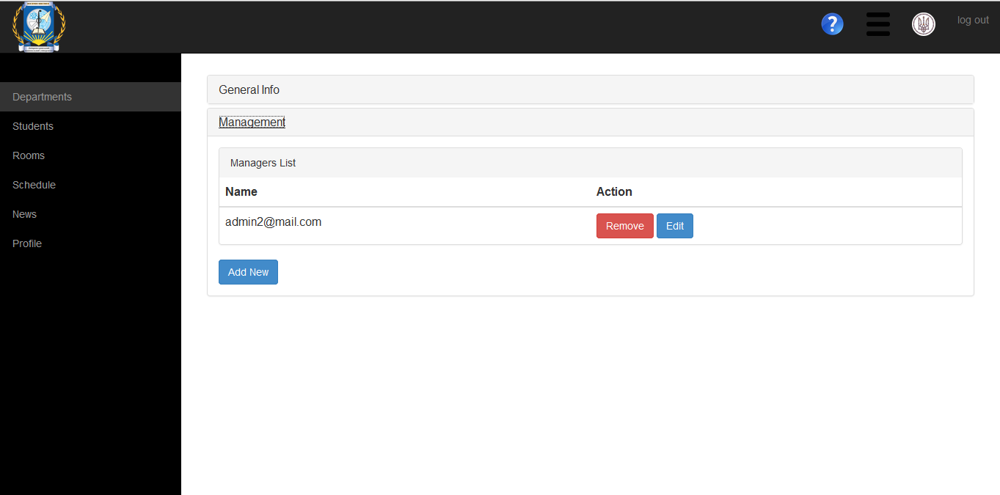
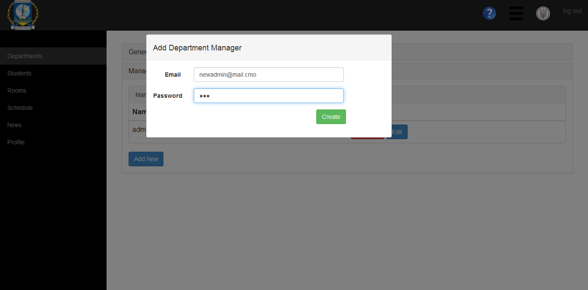
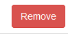

На цій сторінці відображається інформація про обрану кафедру
1. General Info – містить інформацію про обрану кафедру

2. Managment – містить список користувачів, які мають право редагувати дані кафедри.

Для того щоб додати нового адміністратора кафедри необхідно натиснути синю кнопку Add New. У відкритій формі треба ввести email та пароль нового адміністратора кафедри й натиснути зелену кнопку Create.

Щоб видалити певного адміністратора натисніть червону кнопку Remove навпроти.

Created with the Personal Edition of HelpNDoc: Free help authoring tool